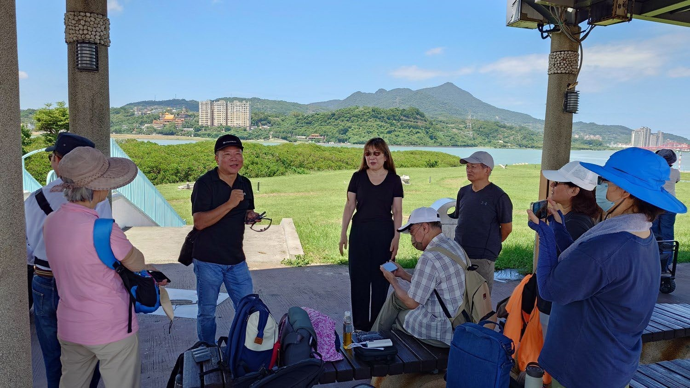
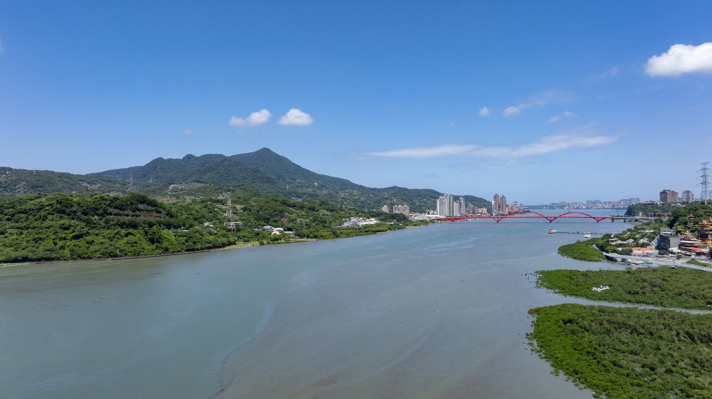
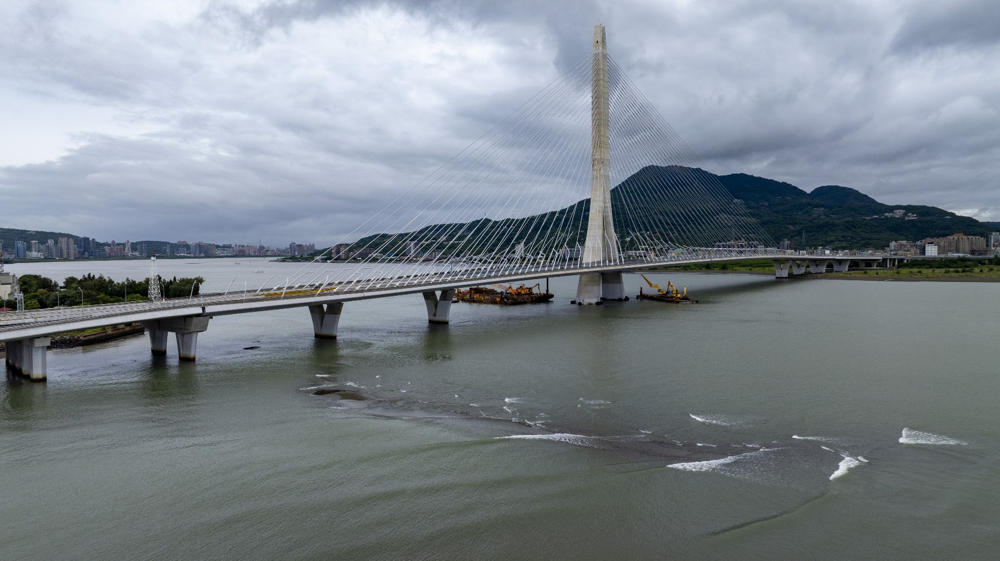
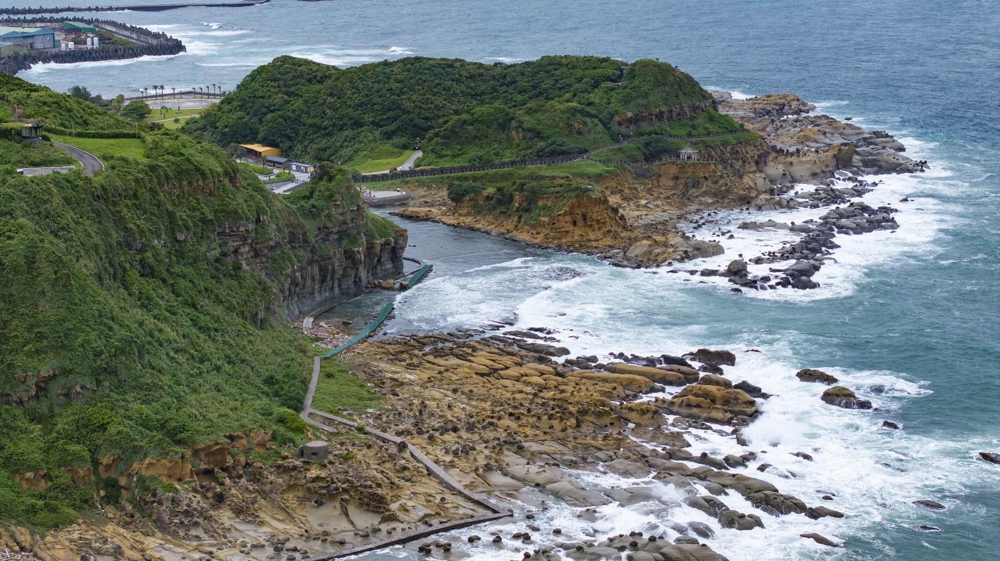
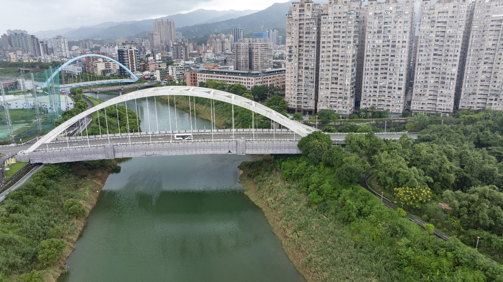
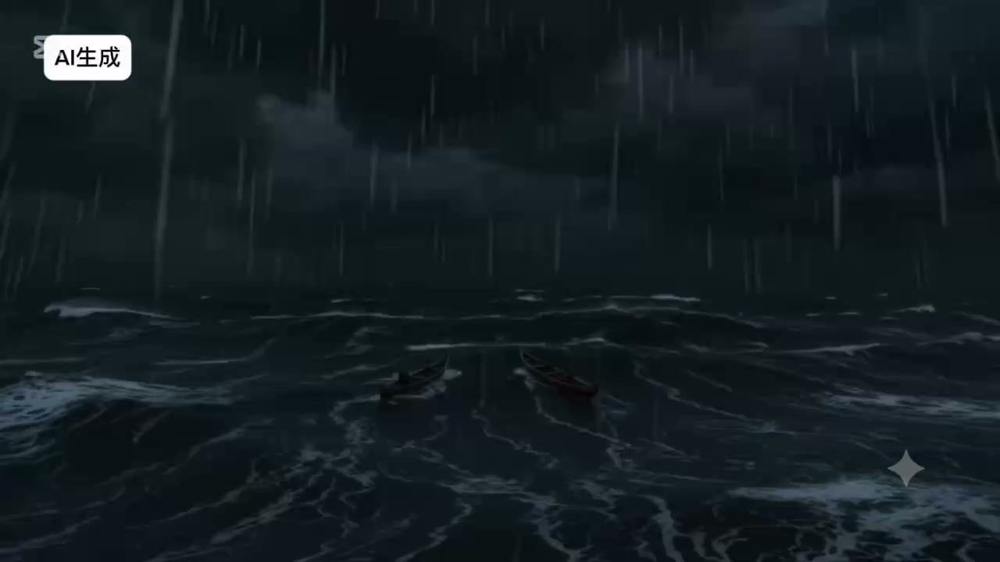
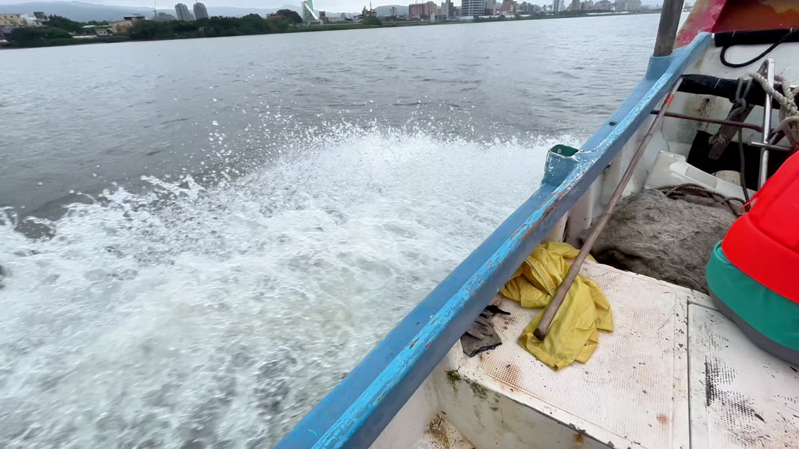
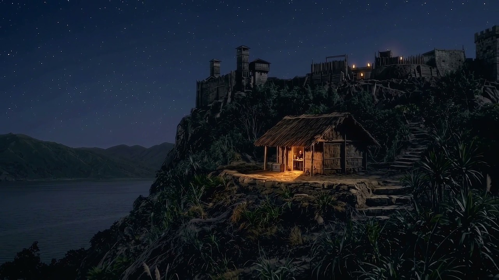

華麗轉向台北原民故事的知識共構教學實踐
何懷嵩・課程設計手記一座很會遺忘的城市，如何重新讀回土地的記憶？老師從課程的起點寫起，留下文獻、走讀、空拍與創作之間，師生共同建立理解的過程。
從文獻走向現場，讀回土地與人的記憶。
閱讀故事從土地的記憶出發，沿著四次田野的足跡，
看見同學們如何把土地與記憶，轉化成自己的作品。

一座很會遺忘的城市，如何重新讀回土地的記憶？老師從課程的起點寫起，留下文獻、走讀、空拍與創作之間，師生共同建立理解的過程。
從文獻走向現場，讀回土地與人的記憶。
閱讀故事
來到社子島頭，河風迎面而來。淡水河與基隆河在此交會，我們攤開古地圖，找到「干豆門」的位置，再抬頭望向對岸，關渡就在不遠處。
從社子島頭出發，在河流交會處重新觀看土地。
閱讀故事


當空拍機升空遠眺，社子島與淡水河在鏡頭下展開，開啟了一場穿越時空的奇幻旅程。Abby 從實體空拍課堂出發，將當代水岸實景與生成式 AI 敘事無縫銜接。從時光漩渦地圖到古老水澤，獨木舟上的凝望、大屯山硫穴的蒸騰煙嵐，逐步拼湊出十七世紀凱達格蘭族與山川共生的生活樣貌。這場奇遇不僅記錄了探索土地的熱情，更以科技之眼重新凝視歷史，喚醒深埋在台北盆地地層下的原鄉記憶。
當空拍機升離河岸，現代地景交疊出四百年前的部落記憶。跟著 Abby 乘上時空獨木舟，在空拍與情境創作之間，展開一場重返凱達格蘭的奇遇。
觀看作品
搭上現代捷運穿梭台北，我們熟悉的都會街廓，能否成為尋訪平埔記憶的時光路徑？張穗芬帶著田野踏查的視角，從北投保德宮刻著「平埔社」的古石雕出發，一路延伸至十三行博物館的陶罐工藝與干欄聚落。影片將今日地景、文獻地圖與史前生活模型細膩疊合，帶領觀者放慢腳步，在日常風景中辨認凱達格蘭族的身世痕跡。當聚落已然隱沒，這些留存的物件與線索，正為我們拼湊出未曾斷裂的土地記憶。
每天穿梭的現代城市，還藏著哪些未曾細讀的平埔線索？跟著張穗芬搭上捷運走訪遺址與博物館，在日常風景的縫隙中，重新辨認凱達格蘭的歷史痕跡。
觀看作品「凱達格蘭族，你在哪裡？」高坤燦以一句真切探問作為航道，操縱空拍機掠過淡水河、社子島、基隆河灣直至汐止與松山。鏡頭從高空俯瞰當代高樓林立的繁華街廓，又在峰仔峙社與錫口社的古老河曲前駐足停留。作品將今日清晰的水路航道，與歷史文獻、地名源流深情疊合，追索隱沒在水泥叢林下的聚落紋理。當聚落的身影已隨歲月模糊，河流的彎折與名字的餘音，正持續為我們指引尋回根源的方向。
當聚落的樣貌隱入都會，我們還能循著什麼找到它？高坤燦帶著「你在哪裡」的真切提問，以空拍鏡頭穿過淡水河與基隆河，追尋這片土地最初的輪廓。
觀看作品
一座住屋、一件陶罐與一張古地圖，究竟能為我們拼湊出多少過往生活的線索？黃文津帶著踏查視角走進八里十三行，將博物館裡的干欄家屋、出土工藝與乾隆古地圖緊密疊合。鏡頭凝視著專注製陶的族人身影，在開闊的淡水河口與觀音山色之間，尋找人與土地依存的深刻脈絡。當聚落日常隨歲月隱沒，這些被用心留存的碎片，正重新喚醒這片土地最初的文明足跡，讓古老深邃的海洋靈魂再次對當代說話。
一件出土文物與古地圖，究竟能接起怎樣的生活輪廓？跟著黃文津在住屋、展件與歷史材料之間停留，從零散的細節中，讀回人與土地依存的深刻記憶。
觀看作品
1632年的夜裡，燭火微光映著木桌。遠渡而來的西班牙神父提起羽毛筆，在手記裡記下島嶼北方的山勢、水路與聚落。傅玉安以歷史文獻為起點，運用生成式 AI 重構十七世紀的時空場景。神父的筆尖穿過雞籠社與淡水河口，記錄下往來水上的獨木舟、帆船運載的硫磺，以及族人最初開口說出的詞彙。邀請你藉由異鄉人的凝視，重新走進四百年前凱達格蘭族的生活：當歷史只留下片語，我們如何讓過往重新對我們說話？
十七世紀的微光下，西班牙神父在手記寫下北台灣的水路與聚落。傅玉安以歷史文獻為底，在影像中重現凱達格蘭族四百年前的生活剪影與相遇。
觀看作品